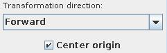

|
|
|
| input port | type | description | data acceptors |
|---|---|---|---|
| inField | VNRegularField | everything |
|
| output port | type | description | data schemas |
| outField | VNRegularField | Field |
|
| outObj | VNGeometryObject |
Fourier Transforms
The module computes forward and inverse fourier transformations.
Input data
The input field is regular 2D 2-space.
Output data
The output field is regular 2D 2 space-regular, there is a geometry object of the field.
Computation parameters

The user chooses between forward and inverse fourier transformation in the Transformation direction drop down list.
If Center origin check box is on the origin of the output field is centered.
Presentation parameters
Presentation tab contents are described in the common interfaces section unter the Presentation Panel entry.